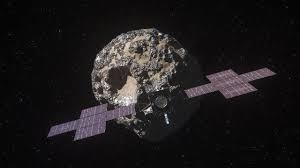

Hera: missão europeia para investigar asteroide desviado pela Nasa decola

Uma nave espacial europeia e dois satélites do tamanho de uma caixa de sapato estão prestes a ser
lançados para examinar as consequências da missão DART (ou Double Asteroid Redirection Test) da Nasa,
que intencionalmente colidiu contra um asteroide chamado Dimorphos e alterou sua órbita há dois
anos.
A missão Hera da Agência Espacial Europeia (ESA, na sigla em inglês) decolou a bordo de um foguete
SpaceX Falcon 9 na manhã desta segunda-feira (7) do Kennedy Space Center da Nasa na Flórida.
A espaçonave e seus dois companheiros, os satélites CubeSat, estão programados para chegar ao asteroide
Dimorphos e ao asteroide maior que ele orbita, chamado Didymos, no final de 2026. Juntas, as três
espaçonaves conduzirão uma “investigação da cena do acidente” para resolver os mistérios restantes sobre
o sistema de asteroides duplos, de acordo com cientistas da ESA.
A Nasa planejou a missão DART para realizar uma avaliação em larga escala da tecnologia de deflexão de
asteroides em nome da defesa de nosso planeta. A agência queria ver se um impacto cinético — como
colidir uma nave espacial contra um asteroide que se move a 6 km por segundo — seria suficiente para
mudar o movimento de um objeto celeste no espaço.
Nem Dimorphos, nem Didymos representam um perigo para a Terra. Ainda assim, o sistema de asteroide duplo
era um alvo perfeito para testar a tecnologia de deflexão porque o tamanho de Dimorphos é comparável a
asteroides que poderiam ameaçar a Terra.
Astrônomos têm usado telescópios terrestres para monitorar as consequências do impacto desde a colisão
em setembro de 2022, e eles determinaram que a sonda DART mudou com sucesso a maneira como Dimorphos se
move, mudando o período orbital do asteroide lunar — ou quanto tempo ele leva para fazer uma única volta
ao redor de Didymos — em cerca de 32 a 33 minutos.
Mas muitas questões permanecem, incluindo se a nave espacial DART apenas deixou para trás uma cratera ou
se seu impacto remodelou completamente Dimorphos. E determinar a composição exata do sistema de
asteroides duplos, bem como as consequências da missão DART, pode ajudar as agências espaciais a refinar
ainda mais a tecnologia que pode desviar asteroides que possam afetar a Terra no futuro.
“Hera fechará o ciclo nos fornecendo em detalhes o resultado final do impacto da DART”, disse Patrick
Michel, diretor de pesquisa do Centro Nacional de Pesquisa Científica da França e principal pesquisador
da missão Hera.
Mais Noticias
Mineração de asteroides: Ficção ou realidade?
Estudo da NASA revela verdades sobre cometas.
Rochas espaciais, tudo o que não te contam.
Voce sabe qual a composição de um asteroide?
Novo asteroide descoberto em rota de colisão com a terra.
Conheça os cometas e asteroides mais famosos da historia.
Feedback e Criticas
Nosso time
| # | Nome | Cargo | Contato |
|---|---|---|---|
| 1 | Nome Sobrenome | Cargo Ocupado | @Rede social |
| 2 | Nome Sobrenome | Cargo Ocupado | @Rede social |
| 3 | Nome Sobrenome | Cargo Ocupado | @Rede social |